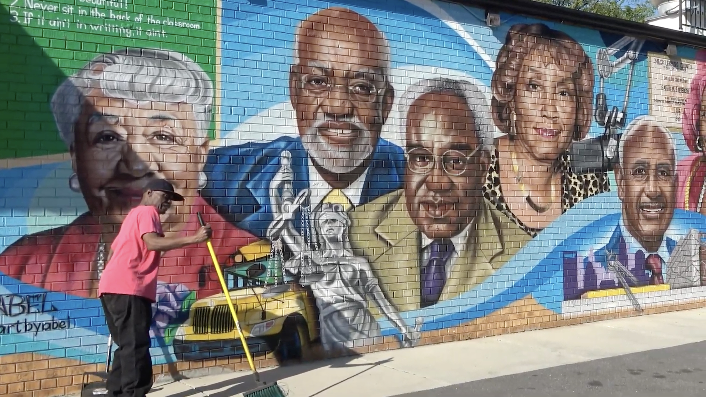

A companion curriculum guide is being developed to help teachers bring the film's themes into the classroom. It will include discussion questions, historical context, primary source connections, and activities for middle school, high school, and college students.
The companion guide is currently in development and will be available here for free download when complete.
Educators interested in early access or screening the film are encouraged to reach out directly at wchshistoryproject@gmail.com
To understand the story at the heart of this film, it helps to know some of the history — of West Charlotte High School, of court-ordered busing in the South, and of what made Charlotte's approach to integration both distinctive and complicated.
Founded in 1938 as a school for Black students, West Charlotte became a center of academic excellence and community identity for Charlotte's African American community for decades before and after desegregation.
Following the Swann v. Charlotte-Mecklenburg Supreme Court ruling in 1971, Charlotte became a landmark case in court-ordered school busing — one of the most consequential and contested tools of desegregation policy.
The conventional story of busing focuses on white resistance. This film asks a different question: what did integration cost the Black communities whose schools bore the greatest burden of change?

River of Life, by Abel Jackson, @artbyabel, a mural at West End Fresh Seafood Market near West Charlotte High School.For those who want to go deeper into the history this film explores. Additional resources will be added here.